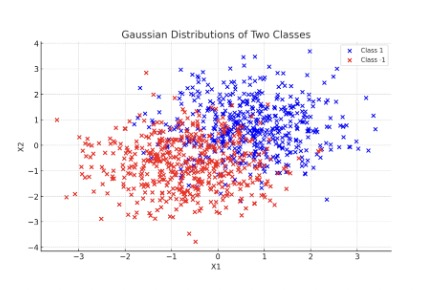
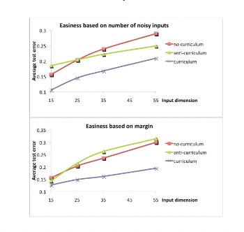
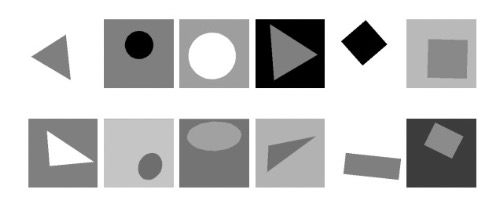
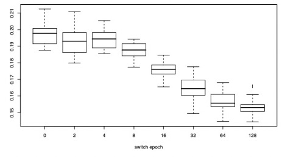
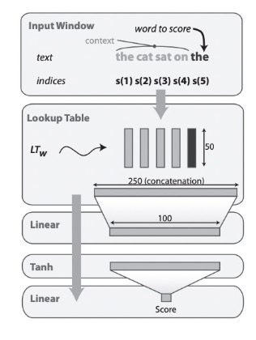
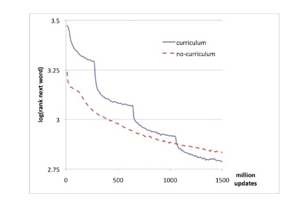

Curriculum Learning
Annotated by: Noah Schliesman
“Education is neither Eastern nor Western, it is human” ~Malala Yousafzai
Abstract
Curriculum learning can be defined as learning easier aspects of the task and gradually increasing the difficulty until the model is ready for the test set. The authors mention that while current experiments show an improvement in convergence speed, many models can benefit from curriculum learning in terms of the quality of local minima obtained as it operates like a regulator.[1]
Introduction
The authors begin with the biological motivation for curriculum learning and compare the process to shaping in animal training. They aim to understand when and where models benefit from curriculum learning, especially in vision and language tasks. The introduction ends with the comparison to a continuation method, which helps find better local minima of a non-convex training function.
On the Difficult Optimization Problem of Training DNNs
The authors note the current (for the time) methods of learning feature hierarchies. The idea here is that learning multiple levels of abstraction at once often leads to non-convex intractable optimization. Since this paper was written prior to dropout, batch normalization, layer normalization, and many of the techniques that make these problems feasible, the author mentions the greedy layer-wise pretraining approach of a Restricted Boltzmann Machine (RBM) used in Hinton’s autoencoder.[2]
They mention the impact unsupervised pretraining has made in the fields of regression, dimensionality reduction, natural language processing, and collaborative filtering. Such pre-tuning allows feasible initial weights for fine-tuned optimization. They note that the experiments presented show that curriculum can act similarly to an unsupervised pre-training to find better minima and converge faster.
A Curriculum as a Continuation Method
As stated above, continuation methods deal with minimizing non-convex criteria by optimizing a smoothed objective and slowly consider less smoothing. Such an idea has stark parallels to Annealed Importance Sampling (AIS) and the approximation of objective distribution is a fascinating area of research.
Take note that each training criterion is associated with a different set of weights on the training examples due to the nature of the problem. We can formalize curriculum learning as follows. Let, \[ C_{\lambda}(\Theta) \] be the single-parameter family of cost functions at step \(\lambda\).
\(\Theta\) be a random variable representing an example \(z\).
\(P(z)\) be the target training distribution.
\(W_{\lambda}(z)\) be the weight applied to example \(z\) at step \(\lambda\).
\(Q_{\lambda}(z)\) be the corresponding distribution to example \(z\) at step \(\lambda\).
\(H(Q_{\lambda})\) be the entropy of the training distribution.
The goal is to first minimize the initial cost function \(C_0(\Theta)\), of which is easily optimized. We then gradually increase \(\lambda\) while keeping \(\Theta\) at a local minimum of \(C_{\lambda}(\Theta)\).
Weights can range from \(0\) to \(1\) such that at the final step \(\lambda = 1\), \(W_{\lambda}(z) = 1\).
The corresponding training distribution is proportional to such a weight applied with the target distribution, \[ Q_{\lambda}(z) \propto W_{\lambda}(z)P(z) \forall z \] It can also be said that the corresponding distribution is a valid probability distribution, \[ \int Q_{\lambda}(z)dz = 1 \] The final training distribution converges to the target training distribution, \[ Q_1(z) = P(z) \forall z \] Due to the sequential nature of curriculum learning, we can say that there exists a monotonically increasing sequence of step \(\lambda\) such that \(0 \leq \lambda \leq 1\). Consequently, corresponding weight monotonically increases in step \(\lambda\), \[ W_{\lambda+ϵ}(z) \geq W_{\lambda}(z) \forall z, \forall ϵ > 0 \] I’ve discussed monotonicity in my annotation of Support Vector Networks if you want a refresher. Curriculum learning can be characterized by an increase in entropy of the training distributions, \[ H(Q_{\lambda}) < H(Q_{\lambda+ϵ}) \forall ϵ > 0 \] It’s helpful to think of curriculum learning as measurable using entropy because it gives us an empirical way to satisfy the theory. This brings the question, how do we measure entropy/complexity? It really depends on the problem. We can generally measure complexity as a form of entropy in terms of,
- Joint Entropy measures the uncertainty between a pair of random variables \(X\) and \(Y\), given the probability mass function \(P(X, Y)\)[3]. \[ H(X, Y) = -\sum_{x \in X} \sum_{y \in Y} P(x, y)\log_2P(x, y) \]
- Conditional Entropy measures the amount of information needed to describe one random variable’s outcome given another’s known value, \[ H(X | Y) = -\sum_{x \in X} \sum_{y \in Y} P(y)P(x | y)\log_2P(x | y) \]
- Mutual Information measures the amount of information one random variable contains about another random variable, \[ I(X; Y) = H(X) + H(Y) - H(X, Y) = H(X) - H(X | Y) \]
- Relative Entropy (Kullback-Leibler (KL) Divergence) measures the difference between two probability distributions \(P\) and \(Q\)[4]. \[ D_{KL}(P||Q) = \sum_{x \in X} P(x)\log_2 \frac{P(x)}{Q(x)}
- Cross-Entropy quantifies the difference between two probability distributions given the true probability \(L\), and predicted probability \(K\), \[ H(P, Q) = -\sum_{i=1}^{N} L(x)\log_2K(x)
Toy Experiments with a Convex Criterion
The authors begin by using noise as a way to measure entropy, with noise defined on being on the incorrect side of the decision surface of the Bayes classifier. The model should thus be trained first on the easy examples and then on the noisy ones to reflect curriculum learning.
Let there be two classes of Gaussian distributions with targets \(y = 1\) and \(y = -1\), a mean of \(\frac{y}{2}, \frac{y}{2}\) and \((-\frac{y}{2}, -\frac{y}{2})\), and a standard deviation of \(1\). Such distributions are plotted below,

Using 50 training examples in a Support Vector Machine (SVM) and random initial parameters, let \(w\) be the weight vector of the classifier. The authors note a statistically significant improvement in generalization error using this method from 17.1% to 16.3%.
They extend this criterion to that of a Perceptron in which the target is described as the sign of the dot product of a weight vector \(w\) and the subset of the input vector \(x_{relevant}\) for predicting the target.
Here, the weight vector \(w\) is sampled from a normal distribution with zero mean and unit variance. The input vector is divided into relevant and irrelevant parts \(x = (x_{relevant}, x_{irrelevant})\), with relevant inputs being sampled from a uniform distribution and irrelevant inputs either being zero or sampled from a uniform distribution. The number of irrelevant inputs set to zero varies randomly for each example, giving the model an easier set of problems and a more difficult set of problems.
The perceptron was trained on 200 examples and the generalization error is measured over 500 epochs. They train with no curriculum (randomly ordered examples) and curriculum (organized by number of irrelevant inputs or the margin \(y w^T x\)). The curriculum-based method greatly succeeds from this procedure over the non-curriculum based method, with an improved significance level of 5%. The results of this experiment are shown below,

Experiments on Shape Recognition
They pivot to an experiment classifying 32x32 grayscale images of geometric shapes separated into two sets. The BasicShapes set contains images of squares, circles, and equilateral triangles. The GeomShapes set contains images of rectangles, ellipses, and triangles (and is consequently more difficult to classify). The authors provide sample inputs from BasicShapes (top) and GeomShapes (bottom),

They authors implement curriculum learning by first training on the BasicShapes data and switching to the GeomShapes training set after a switch epoch is reached. Baseline performance is characterized by a switch epoch of zero.
The hyper-parameters were the number of hidden units and the SGD learning rate. They present a box plot showing the distribution of test classification errors as a function of the switch epoch, which indicates better performance after curriculum learning,

Experiments on Language Modeling
To test language processing using curriculum learning, the authors aim to predict the best word to follow a given context of words in a correct English sentence. Rather than predicting the exact probability of each word over the entire vocabulary, the methodology only needs to rank the correct word higher than the incorrect words using a score.
During training, they use a ranking loss function, which involves sampling negative examples (incorrect words) and ensuring the score of the correct word is higher, reducing computational complexity. Formally, let,
\(s\) be a fixed-size window of text (i.e. original, correct sequence of words).
\(s_w\) be the modified window of text (i.e. candidate sequence where the last word is replaced).
\(f(s)\) be a scoring function for a given fixed window \(s\).
\(D\) be the considered word vocabulary.
\(S\) be the set of training word sequences.
\(C_s\) be the ranking loss function.
The ranking loss function enforces the correct development of scores by penalizing the model if the score is not higher than the candidate score \(s_w\), \[ C_s = \sum_{w \in D} C_{s, w} = \sum_{w \in D} \frac{1}{|D|} \max (0, 1 - f(s) + f(s_w)) \] Intuitively, we can think about a new difference term that \(d_s = f(s_w) - f(s)\), \(d_s \in [0, 1] \forall s\) represents how good our sequence of words is compared to the candidate window. Averaged about the set of training word sequences we obtain, \[ C_{s, w} = \frac{1}{|D|} \max (0, 1 - d_s)
This brings the question: how do we define such a scoring function \(f(s)\)? First, the authors index each word in the input text sequence as, \[ s(1), s(2), s(3), ..., s(|s|)
From here, they use a lookup table that maps each index into a \(d\)-dimensional embedding vector, resulting in matrix \(W \in \mathbb{R}^{d \times |D|}\). This means that the resulting embedding matrix is the size of the dimensionality of the embeddings (for each row) and the size of the vocabulary (which make up the columns).
Such an embedding matrix is then concatenated into a single long vector \(x_{cat}\). The concatenated long vector is fed into a linear layer that transforms it into a lower-dimensional vector. For a weight \(W_{lin}\) and bias \(b_{lin}\), this linear layer output can be described as, \[ y_{lin} = W_{lin} x_{cat} + b_{lin}
It’s now a good time to discuss the dimensionality of linear transformations. Recall that we already established our embedding vector dimensionality as \(d\). For a target dimension of \(d_t\), it is necessary for weight matrix \(W \in \mathbb{R}^{d_t \times d}\) and the bias vector \(b \in \mathbb{R}^{d_t}\).
After reducing our dimensionality, the authors pass the output of the linear layer \(y_{lin}\) through a \(\tanh\) activation function, inducing nonlinearity into the model. Recall that, \[ y_{act} = \tanh (y_{lin}) = \frac{e^{y_{lin}} - e^{-y_{lin}}}{e^{y_{lin}} + e^{-y_{lin}}}
This transformed vector is then passed into another linear layer to produce a single scalar score \(f(s)\). For a weight \(W_{score} \in \mathbb{R}^{1 \times d_t}\) and bias \(b_{score} \in \mathbb{R}^{1}\), the scalar score becomes, \[ f(s) = W_{score} y_{act} + b_{score}
It’s important to note that the learnable parameters during training are the embedding matrix \(W\), the first linear weights and biases \(W_{lin}, b_{lin}\), and the score-producing linear weights and biases \(W_{score}, b_{score}\).
To recap the architecture, we first index the words and embed them into a lookup table. From there we apply a linear transformation followed by a nonlinearity. Lastly, we apply another linear transformation to attain the score for a given sequence. Using SGD, we optimize the embedding matrix and linear transformations to capture the semantic and syntactic relationship for the most likely word. The authors provide the figure below to describe this,

The authors took all possible windows of text from size \(n = 5\) from Wikipedia, yielding 631M windows. To test curriculum learning, they begin with the first pass over the 5k most frequent words and increase the vocabulary size by 5k in each subsequent pass until the 20k target vocabulary. At each pass, any window of text containing a word not in the current vocabulary was discarded. Thus, the vocabulary gradually became more complex, showcasing a curriculum-based strategy.
The no-curriculum method simply trained the network using the final 20k word vocabulary. The authors evaluated the model using the average log of the rank of the last word in each test window.
They used an embedding dimension of \(d = 50\) and 100 hidden units. The curriculum strategy yielded a better average log-rank of 2.78 compared to the no-curriculum rank of 2.83, of which the authors indicate is statistically significant. The results of this experiment are shown below, with each “graduation” being very clear in the graph as the model updates its vocabulary +5k words,

Discussion and Future Work
The authors note the potential benefits of curriculum learning, but note that these results are often based on the strategy of curriculum learning used. Some strategies may be ineffective for some tasks but may thrive in other environments. Such a revelation is similar to that of teaching people, in which there is no one best way to educate.
Still, the relevant work yields faster training in online settings and helps guide training towards better parameter regions, yielding faster convergence and regularization. The authors note that future work should include formalizing general principles, active selection of examples, and automating the pace of curriculum.
They compare the method to boosting, in which difficult examples are emphasized. Such a topic today still is incredibly relevant, especially amidst the generation of synthetic datasets.
Sources
- [1] Bengio, Y., Louradour, J., Collobert, R., & Weston, J. (2009). Curriculum learning. In Proceedings of the 26th Annual International Conference on Machine Learning (pp. 41-48). Montreal, Canada. https://doi.org/10.1145/1553374.1553380
- [2] Hinton, G. E., & Salakhutdinov, R. R. (2006). Reducing the dimensionality of data with neural networks. Science, 313(5786), 504-507. https://doi.org/10.1126/science.1127647
- [3] Shannon, C. E. (1948). A mathematical theory of communication. Bell System Technical Journal, 27(3), 379-423. https://doi.org/10.1002/j.1538-7305.1948.tb01338.x
- [4] Kullback, S., & Leibler, R. A. (1951). On information and sufficiency. The Annals of Mathematical Statistics, 22(1), 79-86. https://doi.org/10.1214/aoms/1177729694